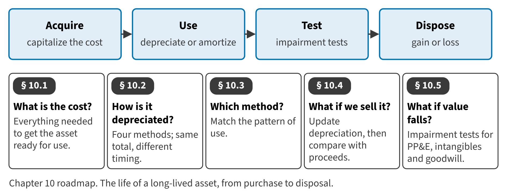

Part II · Recognition and measurement of assets · Chapter 10
Long-Lived Assets: Depreciation, Disposal and Impairment
الأصول طويلة الأجل: الاستهلاك والاستبعاد والهبوط في القيمة
Machines, buildings, patents and brands help a company earn revenue for many years. Their cost is therefore spread over those years, not expensed at once. In this chapter you follow a long-lived asset through its whole life: what goes into its cost, how it is depreciated, what happens when it is sold, and what happens when its value falls.

Start here
Then
What this chapter is tested on
| LOS | Official statement (ICMA, 2024) | In plain words | Depth here |
|---|---|---|---|
| A.2.l | determine the effect on the financial statements of using different depreciation methods | Determine the effect of different depreciation methods on the financial statements. | Full treatment |
| A.2.m | recommend a depreciation method for a given set of data | Recommend a depreciation method for a given set of data. | Full treatment |
| A.2.n | demonstrate an understanding of the accounting for impairment of long-term assets and intangible assets, including goodwill | Account for impairment of long-lived assets, intangible assets and goodwill. | Full treatment |
| A.2.bb | demonstrate an understanding of the treatment of gain or loss on the disposal of fixed assets | Calculate and present the gain or loss on the disposal of fixed assets. | Full treatment |
| A.2.ff | identify and describe the following differences between U.S. GAAP and IFRS: (i) expense recognition, with respect to share-based payments and employee benefits; (ii) intangible assets, with respect to development costs and revaluation; (iii) inventories, with respect to costing methods, valuation, and write-downs (e.g., LIFO); (iv) leases, with respect to lessee operating and finance leases; (v) long-lived assets, with respect to revaluation, depreciation, and capitalization of borrowing costs; and (vi) impairment of assets, with respect to determination, calculation, and reversal of loss | State the IFRS differences: revaluation, components, borrowing costs, development costs and impairment reversals. | Preview (full in Chapter 17) |
The official statements are quoted from the ICMA Learning Outcome Statements (effective September 1, 2024). The plain-words column restates them in simpler English. The exam may test any outcome up to Level C.
What you already know
You know depreciation from your studies. Three U.S. GAAP points may be new: U.S. GAAP does not allow revaluation to fair value; the impairment test for PP&E has two steps and uses undiscounted cash flows first; and U.S. GAAP never reverses an impairment loss on assets that are held and used.
The 9 key terms
Every scene has Check Answers and Try Again. Try Again reshuffles rather than revealing. When you are wrong, the first thing you read is the reason for the option you chose, taken from the book's own explanations. Progress is saved in this browser.